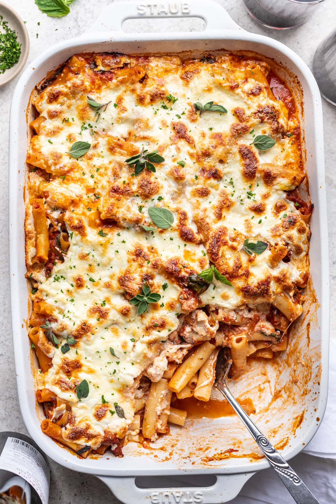

Home
Baked Ziti

How to Make Baked Ziti
A classic, easy Italian-American comfort food. It consists of pasta, sauce, and lots of cheese. Throw it together, pop it in the oven and dinner's ready!
Ingredients
- 1 16oz package of ziti pasta
- 24oz ricotta cheese
- 1lb shredded mozzarella cheese
- 1 large egg, beaten
- 1 32oz jar spaghetti sauce
- 1/4 cup grated Parmesan cheese
Steps
- Preheat the oven to 375 degrees. Lightly grease a baking dish.
- Bring a large pot of salted water to a boil. Add the ziti pasta and cook for 8-10 minutes or to your liking; drain and rinse.
- Combine cooked pasta, ricotta cheese, mozzarella cheese, egg, and 1.5 cups spaghetti sauce in a bowl.
- Transfer into baking dish. Top with remaining sauce, then sprinkle with Parmesan cheese.
- Bake in the oven for 30 minutes; let stand for 15 minutes and then serve!